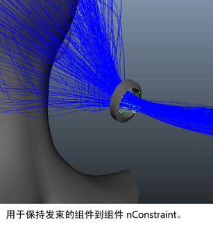

在对象曲面上创建 nHair 后，生成 nHair 模拟的下一步是修改和设置样式。可以通过多种工具（包括“头发缩放工具”(Hair Scale Tool)、“绘制头发工具”(Paint Hair Tool)，动态力、头发系统属性和 nConstraint）来创建头发样式，例如：
- 马尾辫和猪尾辫
- 编辫头发和长发绺
- 卷曲波浪头发
- 多彩条纹头发
- 蜂窝髻
在典型的工作流程中，为模拟修改和设置头发样式是一个迭代过程，可能会涉及两个或更多步骤。例如，您首先创建基本头发形状并将其定位到所需的位置或样式。要执行此操作，您可以：
实现基本的形状或样式以后，使用 nConstraint 将头发样式固定到适当位置（例如，发髻和马尾辫）。例如，您可以创建：

要控制头发样式对力（如 Nucleus 重力）作出的反应，或者它如何与其他 Nucleus 对象（如模型的脸、头皮、颈部或肩部）碰撞，请设置：
- hairSystemShape 节点的“动力学特性”(Dynamic Properties)属性（如“拉伸阻力”(Stretch Resistance)、“弯曲阻力”(Bend Resistance)、“扭曲阻力”(Twist Resistance)或甚至“湍流”(Turbulence)，用于模拟吹干头发(请参见动力学特性）。
- “碰撞”(Collisions)属性（如“碰撞”(Collide)、“自碰撞”(Self Collide)和“碰撞宽度偏移”(Collide Width Offset)来调整 nHair 如何与其他 Nucleus 对象碰撞或与其自身碰撞(请参见碰撞）。
在渲染您的 nHair 模拟之前，可以修改头发的外观（例如，卷曲或笔直、厚或薄），请使用以下属性：
- “束和头发形状”(Clump and Hair Shape)属性，增加或减少头发的数量（请参见束和头发形状）。
- “置换”(Displacement)属性，用于卷曲（请参见置换）。
- “着色”(Shading)属性，用于头发颜色（请参见设置头发着色）。
- “多条纹”(Multi Streaks)属性（仅限于 Paint Effects 头发），用于头发颜色的变化以及增加密度（请参见多条纹）。
- “编辫”(Braid)属性 (follicleShape)（请参见头发编辫）。
- 对灯光设置头发自身阴影（请参见设置头发自身阴影）。
有关创建各种发型（包括卷发、波浪发、辫子和马尾辫）的工作流和建议，请参见发型样例。